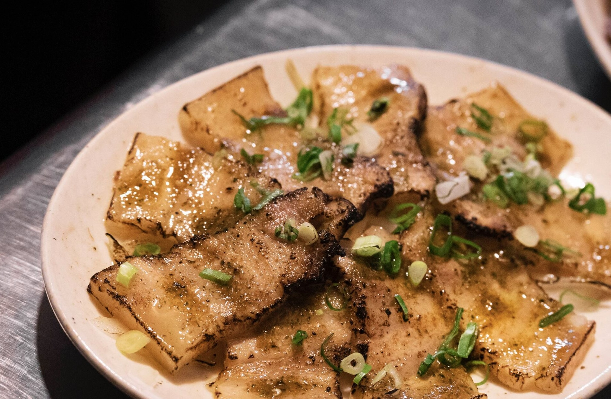

這年頭還敢不掛招牌就做生意的，不是對自己太有自信，就是味道真的有兩把刷子。我點了這裡最具代表性的「皮蛋肉燥乾拌麵」、一份小菜拼盤，還有一碗綜合湯。
先說這碗乾拌麵，剛端上來時，只見麵上蓋著一層細碎的皮蛋塊與肉燥，再撒上滿滿的蔥花與微辣的醬汁，光看就食慾全開。一口拌勻後入口，麵條彈牙、皮蛋微苦中帶香，搭配鹹香不死鹹的肉燥，完全是神級搭配，會讓人默默吃完還想再來一份。小菜拼盤則是另一個驚喜，炙燒三層肉入口即化，經過炙燒的三層肉，油香四溢且油脂的迷人滋味滿佈口中，口感軟嫩不卡牙中帶有一些Q彈的嚼勁，搭配底下附的生洋蔥一起品嘗，起到了解膩且讓這份小菜更為順口的作用。
這是一家好吃而且cp值非常高的小吃攤，缺點是沒有冷氣，座位不多。也許不是最舒適的用餐環境，但那種「只有懂的人才知道」的秘密感。下次你來南港，不妨也來找找看這家沒招牌的小店，讓它用一碗皮蛋肉燥麵，給你一場樸實卻滿足的美食體驗。